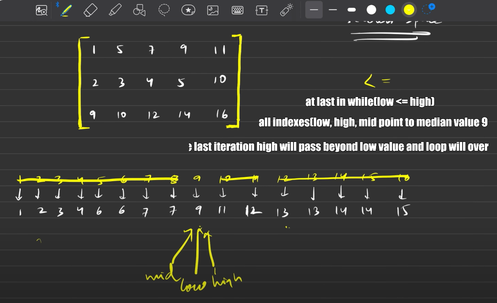

// C++ solution code goes here
int findHowmanyElemLessEqualToMid(vector<vector<int>> &matrix, int m, int n, int mid)
{
//In each row we will find the upper bound of mid variable
//to get number of elems which are <= mid,
//upper boudn returns the > than x
int cnt = 0;
for(int i = 0; i < m; i++)
{
cnt += upper_bound(matrix[i].begin(), matrix[i].end(), mid) - matrix[i].begin();
}
return cnt;
}
int median(vector<vector<int>> &matrix, int m, int n) {
// Write your code here.
int low = INT_MAX;
int high = INT_MIN;
//Get the min as low from first col
//and max as high from last col
//Note Matrix is sorted
for(int i = 0; i < m; i++)
{
low = min(low, matrix[i][0]);
high = max(high, matrix[i][n-1]);
}
int medianIndx = (m*n)/2;
while(low <= high)
{
int mid = (low+high)/2;
int cnt = findHowmanyElemLessEqualToMid(matrix, m, n, mid);
if(cnt <= medianIndx)
{
low = mid+1;
}
else
high = mid-1;
}
return low;
}
